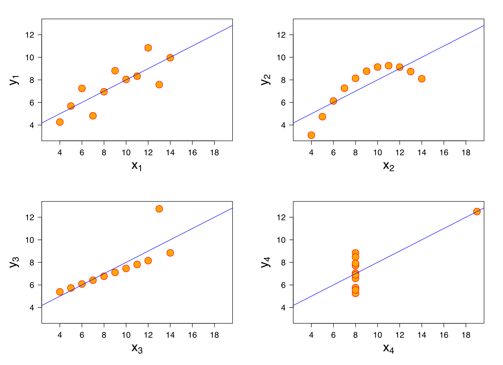

There is a connection to statistics, which we covered in the previous chapter. Consider data forming a scatter plot. That is, you have a bunch of points
\((x,y)\) where each
\(x\) represents one kind of quantity and each
\(y\) represents another kind of quantity. A
regression line is a line which gives the best fit for a line which the points in the scatter plot approximately align with. This regression line is formed by determining out of all possible lines you might draw, which one minimizes the total distance to the points?
Note that scatter plots very rarely look close to regression lines. This kind of model should be understood to have limited accuracy and predictive power. This is demonstrated in the following datasets, known as Anscombe’s quartet. These were crafted by the statistician Francis Anscombe to demonstrate that different datasets can have similar numerical properties but look very different.

Four scatter plots with near identical regression lines yet the graphs look very different. Each regression line has a positive slope. They also have very similar means, standard deviations, and other summary statistics.
The first plot is scattered points that approximately increase linearly. The second plot’s points form an arc shape, like, a ball moving through space. The third form a line with a smaller slope than the regression line, except for one outlier. The fourth is a series of points all with the same
\(x\) coordinate, with one outlier off to the upper left.